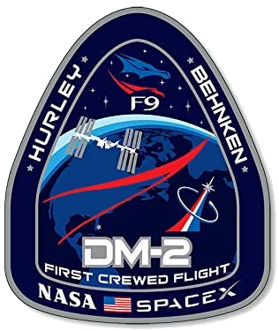

Hyperblog
Tu blog de cabecera
Aquí inicia la historia de un gran proyecto
Y este es el párrafo de inicio donde vamos a explicar las cosas increibles que se pueden hacer con ramas

Los blogs son la mejor forma de compartir informaciín
y tus ideas. Mucho más que ir a conferencias o salir en
Youtube.
Excepto si eres un rockster. Pero estadisticamente
no lo eres... por ahora.
Suscribete y dale like
Leucoplasto